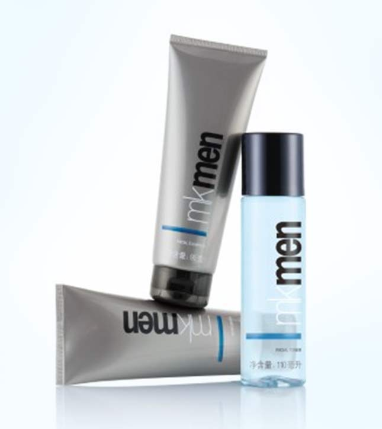
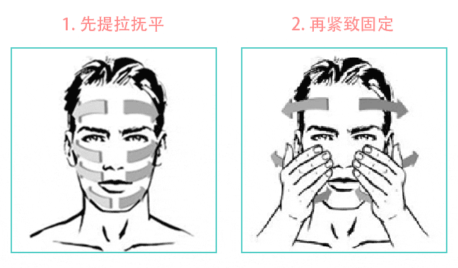

简单三步轻松搞定“他”的面子

男士必做的护理三部曲
Step1清洁
彻底清除残留在毛孔深处的油脂和污垢，以保证毛孔畅通。
Step2爽肤
补充水分，平衡油脂分泌，并收缩毛孔。
Step3滋润
脸部选用保湿滋润的乳霜锁住肌肤的水分并给予充足的营养。
护理流程简单，涂抹手法更简单哦~

如图：首先，顺着肌肤的纹理，由内向外的方向延展，起到提拉面部轮廓，并通过按摩帮助抚平细纹皱纹。好，接下来，再顺着肌肤纹理按压直至面霜全部吸收，帮助紧致肌肤，固定护肤功效。
所有内容最终解释权归玫琳凯（中国）所有